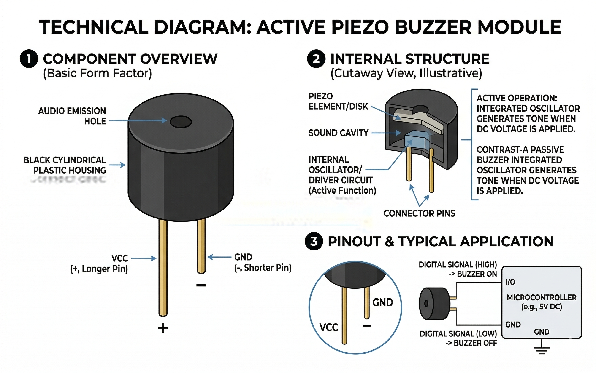

A Piezo Buzzer is a high-pitched audio signaling device. It uses the piezoelectric effect to vibrate a metal diaphragm, creating sound waves.

The core of the buzzer is a disc of piezoelectric ceramic material glued to a thin metal plate.
| Pin | Function |
|---|---|
| Positive (+) | Connect to a PWM-capable digital pin (e.g., Pin 8). |
| Negative (-) | Connect to Ground (GND). |
When the simulation is running, the Piezo Buzzer in OpenHW Studio will emit real audio through your computer's speakers! Make sure your volume is on to hear the tones generated by your code.
Use the built-in tone() function to generate specific frequencies (notes).
void setup() {
// No setup needed for tone()
}
void loop() {
// tone(pin, frequency, duration)
tone(8, 440, 500); // Play an 'A' note for 500ms
delay(1000); // Wait 1 second
tone(8, 880, 200); // Play a higher pitch beep
delay(1000);
}